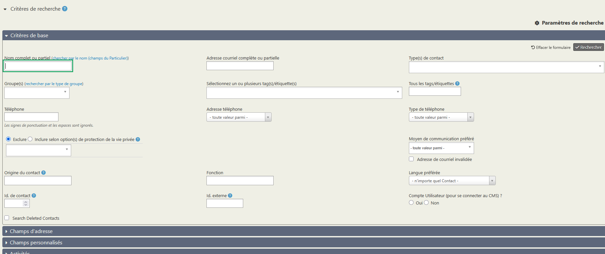

Faire des recherches sur les contacts
La recherche rapide
La recherche rapide est celle accessible via l'icône de loupe , tout à gauche du menu de CiviParoisse. Par ce biais vous pouvez rapidement retrouver un contact si vous connaissez par exemple son nom, ou son numéro de téléphone.
L'ensemble des moyens de rechercher un contact permet l'utilisation du caractère générique %. Ainsi, rechercher Mich% vous donnera tous les "Michel", mais aussi les "Michelle" et les "Michaël".
La recherche simple des contacts
Vous accédez à la recherche simple en cliquant sur Rechercher puis Rechercher des contacts.
Bien que considérée comme simple, elle vous permet de filtrer par exemple les résultats par type de contact ( individu, foyer ou organisation), par groupe ou encore les contacts ayant une étiquette précise.
Astuce
Dans la liste des résultats, laissez votre souris sur l'icône de la fiche (que ce soit un individu, un foyer ou une organisation) et une fenêtre apparait affichant un résumé de la fiche.
La recherche avancée
Vous accédez à la recherche avancée en cliquant sur Rechercher puis Recherche avancée.
Cette recherche est très puissante et vous donne accès à toutes les données de CiviParoisse.

N'hésitez pas à explorer les différentes catégories.
Elle vous permet par exemple d'indiquer plusieurs critères que vous combinez en cochant "Et" ou "Ou".
Par cette recherche vous avez plusieurs possibilités, la recherche par quartier par exemple. De même vous pourriez chercher toutes les personnes sachant jouer du piano.
Si en septembre vous voulez contacter tous les jeunes de 11 ans pour les inviter au catéchisme, il suffit de vous rendre dans
Données démographiques, d'indiquer en âge minimal et maximal "11" et vous aurez la liste des jeunes concernés. De façon semblable pour lister tous les plus de 65 ans pour la fête des Aînés.
Il est également possible d'écrire aux parents des jeunes ainsi sélectionnés. Pour cela, saisissez d'abord les critères pour sélectionner les jeunes (comme ci-dessus par exemple), puis en haut à droite de l'écran, dans les Paramètres de recherche, choisissez le type des résultats Contacts liés. Sélectionnez ensuite le type de relation Parents de, et cliquez sur Rechercher.
Notez qu'à tout moment vous pouvez modifier vos critères de recherche en cliquant sur Modifier les critères de recherche, sans avoir besoin de tout paramétrer à nouveau.
Astuce
CiviParoisse étant utilisé dans votre navigateur préféré, faites un clic droit sur un des noms de la liste de résultat et choisissez Ouvrir dans un nouvel onglet pour ouvrir la fiche de contact dans un nouvel onglet, vous permettant de revenir aisément à votre liste ensuite.
Utiliser les recherches pour mener des actions
Admettons que vous avez recherché tous les jeunes de 11 à 13 ans, et que vous souhaitez créer un groupe "Liste de diffusion" pour communiquer régulièrement avec eux, il vous suffit, une fois la liste des contacts affichée, de cliquer sur Sélectionner : et cocher Tous (x trouvés). Cliquez ensuite sur Actions puis sur Groupe - créer un groupe dynamique pour créer votre liste de diffusion.
Prenons un autre exemple, vous avez un groupe constitué des paroissiens qui ont fait un don à la paroisse l'année précédente à qui vous voulez envoyer un mot de remerciement.
Pour envoyer des courriers à ces personnes, il vous suffit de faire une recherche en utilisant la recherche simple, et en recherchant le groupe en question.
Une fois la liste affichée, sélectionnez tous les contacts comme vous avez appris à le faire, puis cliquez surActionset choisissez en fin de listeEtiquettes pour la poste - imprimer.
Dans la fenêtre qui s'affiche, choisissez dans le menuSélectionner un format d'étiquettele format des étiquettes dont dispose la paroisse, puis cliquez surImprimer des étiquettes pour la Poste. Un PDF est généré avec les étiquettes des différents foyers, il ne reste plus qu'à l'imprimer sur des planches d'étiquettes, et à envoyer votre courrier.
Le menu Actions propose également, selon le contexte, les possibilités suivantes :
- Afficher les contacts sur une carte
- Ajouter des relations aux contacts
- Supprimer les contacts (à manier évidemment avec précaution !)
- Ajouter une information sur une interaction avec les contacts (activités)
- Envoyer des courriels (en savoir plus)
- Fusionner des doublons
- Ajouter ou enlever les contacts d'un groupe
- Inscrire les contacts à un événement
- Exporter les informations dans une feuille Excel